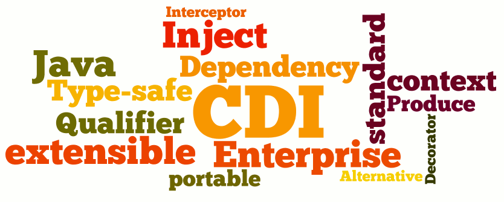

Quarkus CDI |
|
SpringBoot DI |
Created by Estefanía Castro for Serbatic
Quarkus ArC is a build-time oriented dependency injection based on CDI 2.0. Basically it is a CDI implementation.
There are two primary parts of CDI:
It allows us to manage the lifecycle of stateful components via domain-specific lifecycle contexts and inject components (services) into client objects in a type-safe way.
Inversion of Control is a principle in software engineering by which the control of objects or portions of a program is transferred to a container or framework.
It can be achieved through various mechanisms such as: Strategy design pattern, Service Locator pattern, Factory pattern, and Dependency Injection (DI).
Spring generates enhanced configuration clases by creating CGLIB proxy/subclases during the initialization process so that it makes possible the inter-bean method references.
SomeConfiguration$$EnhancerBySpringCGLIB$$4b5569b2Any method invocation will be intercepted to determine if the bean has already breen created (the existing cached instance will be returned) or if the configuration class has to create the bean. This guarantees your initialization code is called just once (singleton scope).
Generating proxies for configuration classes takes some time and might affect your application startup time.
Lite Beans are beans that are not going to be intercepted. We can get this mode using
@Configuration(proxyBeanMethods=false)The javadoc gives a detailed explanation for this particular field:
Specify whether {@code @Bean} methods should get proxied in order to enforce bean lifecycle behavior, e.g. to return shared singleton bean instances even in case of direct {@code @Bean} method calls in user code. (...) If this is not needed since each of this particular configuration's {@code @Bean} methods is self-contained and designed as a plain factory method for container use, switch this flag to {@code false} in order to avoid CGLIB subclass processing.(...)
@Configuration(proxyBeanMethods=true)
public class SomeConfiguration {
@Bean
ServiceC sharedService(){
return new ServiceC();
}
@Bean
ServiceA serviceA(){
return new ServiceA(sharedService());
}
@Bean
ServiceB serviceB(){
return new ServiceB(sharedService());
}
}
@Configuration(proxyBeanMethods=false)
public class SomeSmarterConfiguration {
@Bean
ServiceC sharedService(){
return new ServiceC();
}
@Bean
ServiceA serviceA(ServiceC sharedService){
return new ServiceA(sharedService);
}
@Bean
ServiceB serviceB(ServiceC sharedService){
return new ServiceB(sharedService);
}
}
CDI oficial documentation Quarkus article about CDI Quarkus CDI examples Springboot official doc about IoC Springboot IoC example Springboot DI vs Quarkus CDI